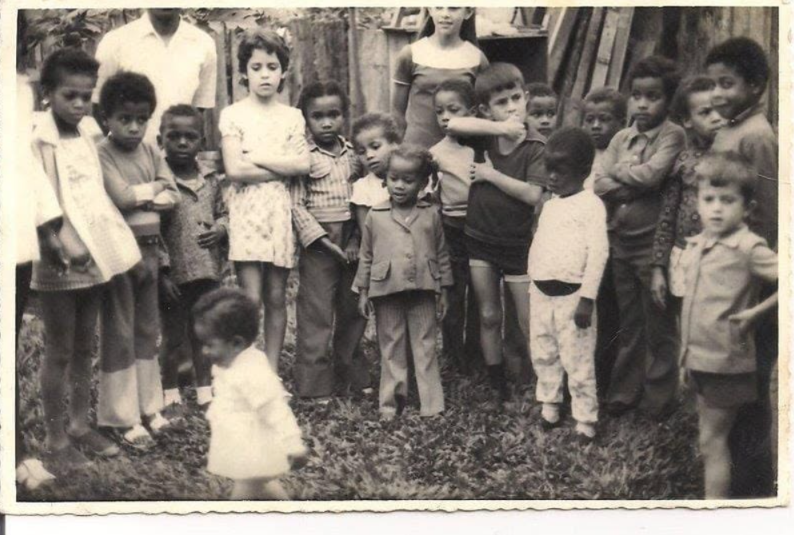
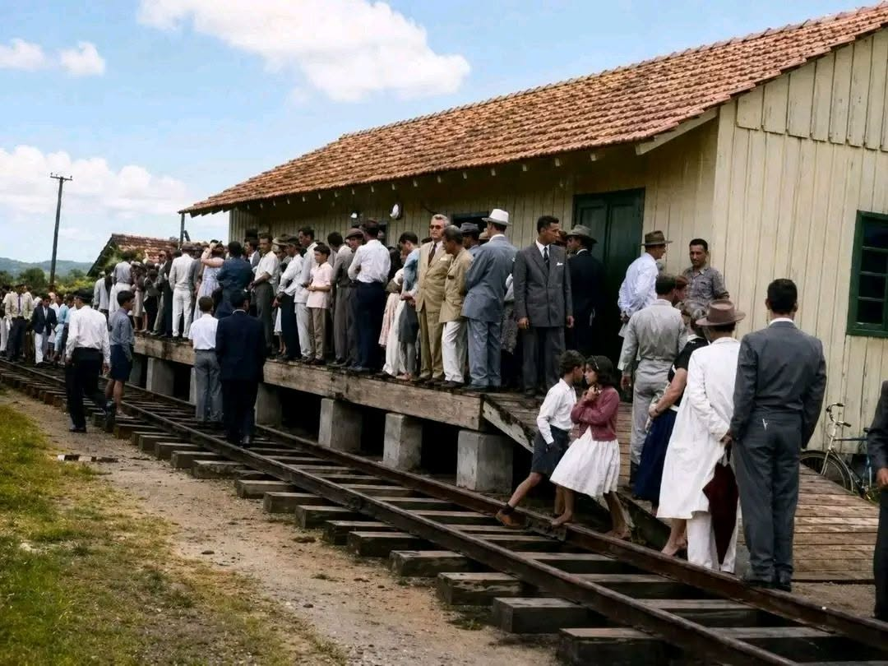
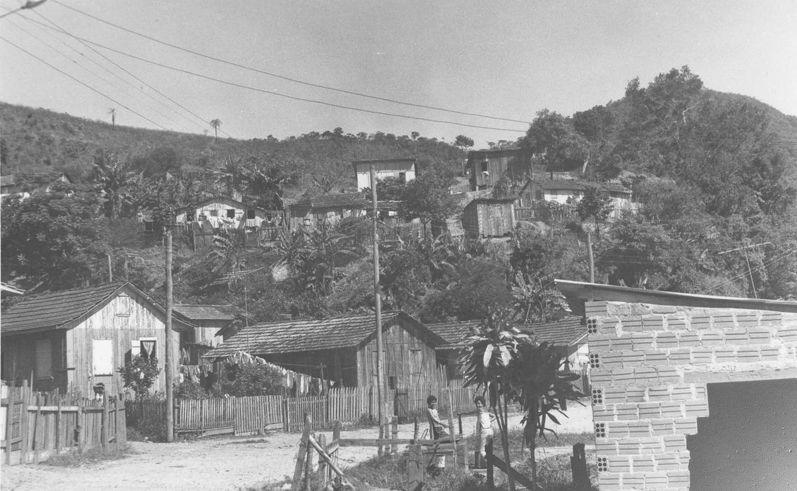
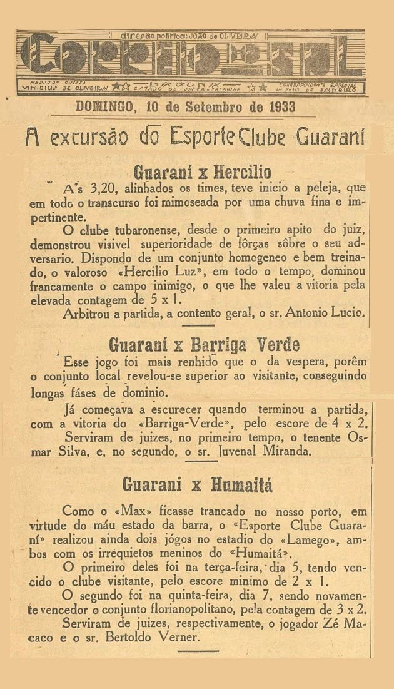

R. Hercílio Luz, 215-125 - Centro, Itajaí
Igreja do Santíssimo Sacramento e de Nossa Senhora da Conceição
Patrimônio histórico localizado no centro de Itajaí.
Conheça o lugarCatálogo de memória e patrimônio
Espaço para reunir locais de importância para a história, a cultura e a memória da população negra em Itajaí e no Vale do Itajaí.
Os locais apresentados nesta seção seguem a classificação proposta pela antropóloga Ilka Boaventura Leite, que distingue os territórios negros em duas categorias: os de ocupação residencial e os de ocupação interacional. Essa classificação é retomada por José Bento Rosa da Silva (2025), no artigo Clubes Negros em Itajaí (SC): territórios de ocupação interacional (1903–2025). A maioria dos territórios residenciais foi "removida" com a reurbanização da cidade a partir do final da década de 1980. E os clubes são territórios interacionais, ou seja, espaços de lazer e sociabilidade criados pela comunidade.
R. Hercílio Luz, 215-125 - Centro, Itajaí
Patrimônio histórico localizado no centro de Itajaí.
Conheça o lugar
Rua Getúlio Vargas, Vila Operária, ao lado da Sociedade Sebastião Lucas
Evento gratuito de 12 horas com música, capoeira, dança, feijoada e feira de artesanato.
Conheça o lugar
Local confirmado não informado
Patrimônio imaterial reinventado em 1992 pelo movimento social negro.
Conheça o lugar
Atividades itinerantes em diversos locais de Itajaí
Campanha da Secretaria de Assistência Social e Cidadania pelo mês da Consciência Negra.
Conheça o lugar
Bairro Nova Esperança, Balneário Camboriú, SC
Comunidade certificada como remanescente de quilombo pela Fundação Cultural Palmares.
Conheça o lugar
Bairro Fazenda, Itajaí, SC
Território ligado à sesmaria do fim do século XVIII e à Pastoral do Negro criada em 1988.
Conheça o lugar
Casa Lins, Centro, Itajaí
Acervo documental fundado em 1976 pela Fundação Genésio Miranda Lins.
Conheça o lugar
Rua 24 de Abril, 99, Carijós, Indaial, SC
Centro cultural, educacional e assistencial de uma comunidade tradicional de matriz africana fundada em 2004.
Conheça o lugar
Endereço não confirmado, Indaial, SC
Projeto de ensino das tradições de matriz africana criado pela Associação Reino de Oxóssi em 2023.
Conheça o lugar
Rua Pedro Dionísio de Souza, 191, fundos, Centro, Navegantes, SC
Associação esportiva e sociocultural voltada à capoeira e à cultura popular.
Conheça o lugar
Local não confirmado, possivelmente Navegantes, SC
Espaço ligado a oficinas de culinária afro-brasileira, vestuário afro, capoeira e manifestações culturais.
Conheça o lugar
Morro da Igreja, centro de Gaspar, SC
Paróquia com registros de batismo de 1861 a 1888 usados na reconstituição de famílias escravizadas e libertas.
Conheça o lugar
Endereço não confirmado
Território negro residencial de Itajaí, hoje desaparecido ou descaracterizado pela reurbanização.
Conheça o lugar
Endereço não confirmado
Território residencial que mudou de nome com o tempo.
Conheça o lugar
Endereço não confirmado
Território residencial negro de Itajaí, distinto do Esplanada – Quilombo Timbó.
Conheça o lugar
Bairro Nossa Senhora das Graças, Itajaí — endereço não confirmado
Território residencial ligado ao bairro, também afetado pela reurbanização.
Conheça o lugar
Endereço não confirmado
Importante espaço de sociabilidade, lazer e resistência da população negra de Itajaí.
Conheça o lugar
Endereço não confirmado
Primeira organização náutica de Santa Catarina formada por pessoas negras.
Conheça o lugar
Endereço não confirmado
Clube extinto que integrou a organização esportiva e comunitária da população negra.
Conheça o lugar
Endereço não confirmado
Organização mais antiga da lista, com nome relacionado à Abolição da escravidão.
Conheça o lugarOs locais serão adicionados aqui.